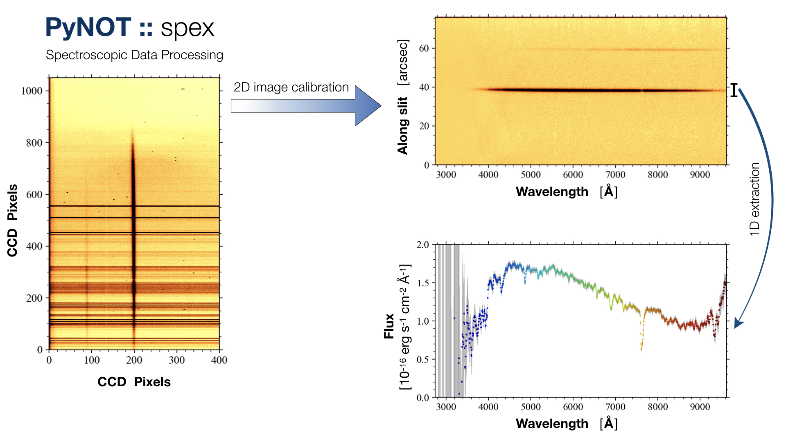

For more information about me and my research, visit my homepage:
PyNOT
PyNOT is a data processing pipeline for the ALFOSC instrument at the Nordic Optical Telescope on La Palma, Spain. The pipeline works as a collection of individual tasks which can either be run manually, step by step, or as an automated workflow. The tasks are designed to process standard CCD imaging and long-slit spectroscopy. The pipeline has two main modules: the spectroscopic module (spex) and the photometric module (phot). These are run from the command line and controlled by a single parameter file that allows the user to change individual parameters. The spex module furthermore has a set of graphic user interfaces to make certain steps of the data processing easier and more convenient.
PyNOT – spex
The spectroscopic data processing pipeline (spex) handles all the necessary steps needed to calibrate a raw CCD image of the spectrum. The final outputs are: a 2-dimensional wavelength- and flux-calibrated spectrum; and a 1-dimensional extraction. The pipeline can be run in a fully automated mode, requiring minimal input from the user. The pipeline performs a sequence of zero-level subtraction, flat field correction, wavelength calibration and rectification, flux calibration and extraction. For more information about the individual tasks, see the spectroscopic example page and the dedicated task overview in the menu bar on the left.
PyNOT – phot
The photometric data processing pipeline (phot) takes care of the steps needed to calibrate raw CCD images. The pipeline performs an automated sequence of zero-level subtraction, flat field correction, trimming, cosmic ray rejection, image registration, combination, source extraction and WCS calibration. For more information about the individual tasks, see the photometric example page and the dedicated task overview in the menu bar on the left.

Acknowledgements
I want to thank my former thesis advisor, Prof. Johan Fynbo for helpful discussions and feedback, and for introducing me to the Nordic Optical Telescope in the first place (back in 2012). PyNOT was written using the following Python packages: astroalign, astropy, astroquery, astroscrappy, lmfit, matplotlib, numpy, PyQt5, PyYAML, scipy, sep, and spectres. I want to give a huge shout out to all the developers of these packages. Thanks for developing these fantastic tools and for sharing your work!